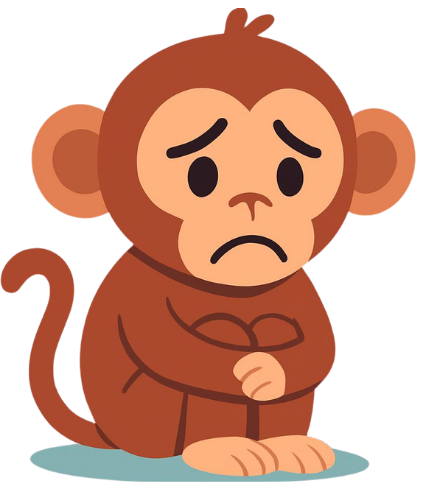
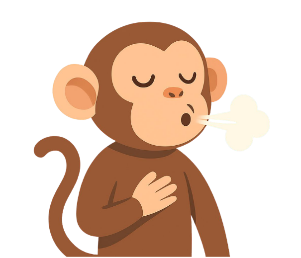
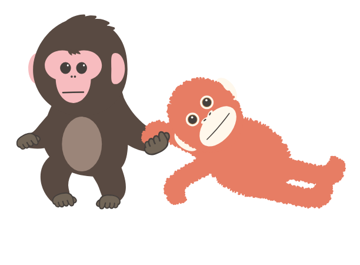
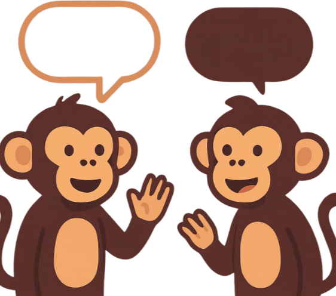
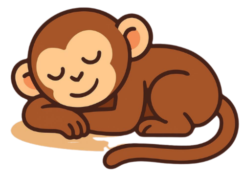
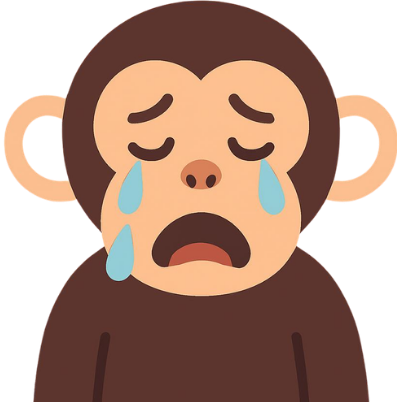

Gracias por tomarte un tiempo para ti
Según tus respuestas, estos son algunos tips para manejar el estrés
Según tus respuestas, estos son algunos tips para manejar el estrés
Si hoy elegiste una carita triste o seria, está bien. No tienes que forzarte a estar feliz todo el tiempo.
Date permiso de tener un “día gris”. A veces solo aceptar cómo te sientes hace que pese menos.

No es lo mismo sentir un poquito de estrés que sentir que todo te rebasa.
Si sientes que estás muy saturado, haz una pausa. No tienes que resolver todo ahorita. Sal un momento respira, mira al cielo o simplemente quedate en silencio un rato.

Si algo (como redes o personas) te está drenando, aléjate un rato

Guardarte todo puede hacer que te sientas más pesado.
Escribe lo que sientes aunque no tenga sentido o habla con alguien de confianza, no tienes que esperar una respuesta, a veces, solo necesitas que alguien te escuche.

Si necesitas descansar, hazlo. No tienes que "ganarte" el descanso. Descansar tambien es parte de cuidarte.

Llorar también es una forma de soltar. Llorar ayuda a liberar tensión y bajar la carga emocional, recuerda que tambien es sano y válido

Es normal quereraislarse o ver el teléfono, pero a veces eso solo nos cansa mas la vista y la mente